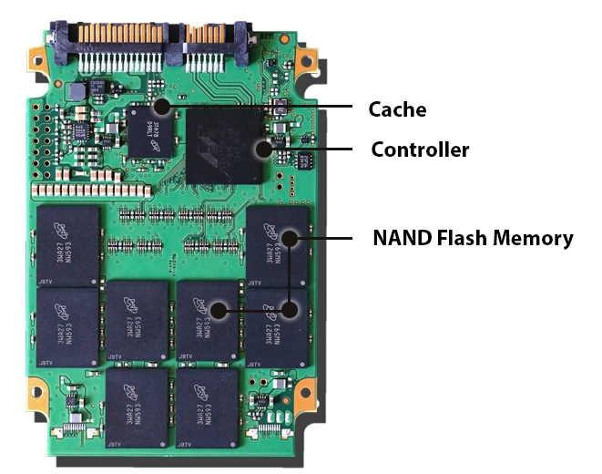

Why does it Matter?
Storage drives store games and any preloaded files for online gameplay. You will need enough storage space to store
your games and anything else that you may have on your computer. HDD (Hard drives) and SSD (Solid-state drives) are
options that a consumer has to decide on. They both store data but are both different from the perspective of the technology for
these storage devices.
